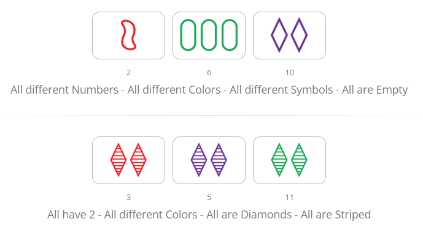

Weekly 1
9/1/2023
This first full week of classes has not been the most interesting to me because I am already acquainted with HTML and CSS.
I learned the basics of HTML and CSS back in my freshman year of high school and have made and hosted (other people hosted them for me lol) a few websites since then.
Despite knowing the languages for a while now, I have not used them as often as programming languages such as Java or C, so my knowledge is not the most indepth.
I am looking forward to getting more knowledge and experience working with HTML and CSS as the semester goes on.
Another course that I am taking this semester is going over JavaScript as well so I am looking forward to that too.
As mentioned by one of the other CS majors in the class, there isn't much in terms of courses dealing with front end or interface design in our curriculum,
which is another reason I am looking forward to the more advanced parts of this class.
I will say that not having to worry much about learning stuff at the beginning of a class is kinda nice since I can focus more attention to other classes that I might need to learn more for.
Not to say that this class is easy or anything, I just have prior knowledge of the subject.
I think that despite being bored this first week or so of class, I will end up enjoying it a lot, since I am very interested in web and interface design.
Weekly 2
9/8/2023
This week has still been a little boring for me but I think that things will pick up soon.
It also hasn't really been a full week since we did not meet today (friday).
I am excited to learn more in this class and see what we will do next as we get more into the semester.
I am looking forward to learning more about design and styling webpages since I don't have very much experience with that.
I am taking a CS class that deals with a more of the backend of web development so I think it's good that I'm learning about both sides in the same semester.
I also am interested in being more artistic with the development of webpages since this is the "Internet Art" class.
I am a bit disappointed that class was cancelled today since I didn't see the announcement that class was cancelled until I made it to the classroom,
and I have to meet people on campus later so I will have to commute back to campus tonight.
On the flip side I am glad because I forgot to bring my earbuds with me so I am able to just work on school stuff at home on my desktop instead of on my laptop on campus.
All in all it wasn't the worst turn of events since I am still always a bit glad when I don't have to show up to a class lol.
Can't wait to get back to it on monday.
Weekly 3
9/15/2023
I don't really have many thoughts that are different than what I've already put in the other two weeklys.
It might be a bit before I start learning new stuff because of the fact that I have prior experience.
Because of that, for this weekly I'll talk about what I'm doing with HTML, CSS, and Javascript in another one of my classes.
For the first project of my CSE3901 class, we are making the game 'Set' in using HTML, CSS, and Javascript.
Set is a game where you have 12 cards laid out in front of you and have to make sets of 3 with those cards based on the attributes.
The cards can have either diamonds, squiggles, or a pill kinda shape on them, they can have 1, 2, or 3 of the shapes, the shapes can be hollow, shaded in with lines,
or completely filled in, and be either red, blue, or green.
For three cards to be a set, no two can be the same and one be different on any feature, this means that all of them can be the same though.

An example of 2 sets
The project has been going good so far, we have gotten a good amount of the backend logic done and last night I started blocking out the HTML of the frontend.
It is due in two weeks but I think we should be able to finish early, even though I expect that marrying up the Javascript and HTML is gonna be a bit difficult.
Weekly 4
9/23/2023
This week was a bit different from the last few.
Wednesday was interesting since we got to look at some of our classmates submissions.
Friday was interesting as well since I had to present with my group about interfaces.
I actually finished my slides for the presentation at like 1 am the night before since I had been working on a project for another class most of the night.
So far we still haven't covered anything that I didn't know before.
The next thing we are learning is using Github, which I already had to learn for another class so that won't be new either.
It's still early in the semester though so hopefully the new content (for me) comes sooner rather than later.
This weekend/monday I have quite a few things due but I've gotten almost all of them done, after this I only have 1 more thing and it's a group project.
It's also almost done anyway, I'm just waiting for one of the other members to finish something then we will just have to polish it up and make it look nice.
After that I'll have a nice relaxing week of not much work to do, I'm very much looking forward to that.
I don't really have any other thoughts about this week, just tired of doing school work all night every day and then having to work on the weekends.
Hopefully next week is good and I have more to write about than this week.
Weekly 5
10/6/2023
This week has been more interesting that the first few, the demos that are being done in class are showing me new things that I haven't learned before.
I am excited to see what else we will be learning since we still have a lot of the semester left.
I havent really started working on my project 1 proposal but I think that I'll be able to get something good together.
This week has been a little stressful since I've had a bit to do for other classes
and I've been trying to get some work done ahead of time since I have plans on the weekend.
I've gotten all the work I need to done though so I've been able to chill for a little,
and I won't have to worry over the weekend about work thats due on the weekend.
I've been enjoying my classes so far and nothing has felt like its too hard or too much work, which is good.
It is also suprising since I'm taking 5 classes this semester (granted, one of the classes is 1 credit hour).
I'm also glad that most of my classes are online basically, with 2 of them being online based and this class I can just join the zoom,
it makes it a lot easier for me since I don't have to drive from my house to campus every weekday.
I'm looking forward to what the rest of this class, and my other classes have in store for me this semester.
Weekly 6
10/19/2023
Ive been learning more this week and am excited for this current project.
I think that this project is going to be fun and I think that Ill be able to create what I
envision my site looking like.
There are some other inspirations that I might try to incorporate into my site, but that might
be something that I do if I have extra time.
Im curious to see other peoples sites since some of their proposals seemed interesting.
My other classes have been going well so far this semester and despite taking 5 classes (really 4 and a half)
the work load has been very manageable.
This is my last semester so I am glad it has been going smoothly.
I also have been enjoying all of my classes, which is nice, since I have definitely had some classes that I have not enjoyed in the past.
Its been a good semester so far and I feel like it will be for the rest of the time as well.
I am looking forward to the rest of the semester and to life after college.
I am going to start applying for jobs soon and hopefully line something up for after I graduate.
Overall things are going pretty well and I think that they will continue to, I am looking forward to what will come next in all of my classes.
I dont really know what else to say, thats basically all thats going on with me right now.
Weekly 7
11/12/2023
I think that I was able to do what I had imagined for the first project of this class.
The only thing that I wish I was able to do was add more dynamic aspects to the site, similar to
one of the examples that I had in my proposal. (I can't remember which one)
But overall I am happy with how it turned out.
I'm excited to learn P5 and all that can be done with it, since it's a lot more artistic than
most of the front end stuff I'm used to.
As for my other classes, it has just been pretty normal so far, not much super exciting as we are wrapping up the semester
I am glad to only have 1 final this semester though, so that I'll be able to fully be done with classes earlier and enjoy
the little bit of time off I'll have before getting a job.
I currently have a job that I work at on weekends but since I am graduating I have been looking for and applying to jobs that
are computer science related.
So far I have gotten one phone interview and I am currently waiting on more information for the second interview for that position.
It would be a nice job to have as I wouldn't have to move and would have a short commute from my house to Easton.
The recruiter said she would have more information by next week, which will be this coming week, so hopefully everything goes well
and I get that position, as it would start right after the new year.
Weekly 8
11/19/2023
This week has been a bit stressful as I had quite a few things that I needed to get done before the end of it, but I ended up getting it all done
and it has been such a relief.
My classes haven't been the hardest this semester but I that doesn't mean it doesn't get hard at times.
I've enjoyed my last semester so far and I think it will stay that way until the end.
I've still been applying for jobs since the last weekly.
As far as I know, I've applied for every entry level tech position in the Columbus and Cincinatti area that works in-person, so I've started applying for
remote positions as well just to have the best chance of finding something.
If I really can't find anything I might have to consider moving but I don't think I'm at that point yet.
I'm excited to work in tech as I'm pretty sure I will enjoy it a lot more than my current and previous employment.
I think that me not doing an intership was to my detriment but I don't think it will completely stop me from finding a job.
I am excited to graduate and get out into the world, even though my life won't change that much lol.
I will likely still be living at my parents place, but just working full time instead of going to school full time.
This class has been fun so far and I've definately learned things I didn't know before and I hope that continues.
Weekly 9
12/1/2023
It is now the end of the semester.
I have learned a lot this semester and it has been a good one to send off my college career.
So far I have all A's in my classes and I don't think that will change as I have completed
pretty much all of the needed work for my classes.
I enjoyed this class and pretty much all of my other classes this semester, which isn't always
the case, and it is especially suprising that I kinda enjoyed my CSE project class.
My least favorite class this semester was design history because we had to write two papers,
which isn't the hardest thing to do, but I find writing papers to be a very tedious task.
For my final project in this class, I didn't really feel like there was any aspect of the page
that I didn't get to the first time around, so after adding in the needed weeklies and exercises
I decided to add a game made entirely in p5 js.
The game is very simple, you just move a circle around to collect the squares on the screen
with a score counter on the top, and the code reflects the games simplicity.
I did this because I didn't want to just turn in the same project again and I wanted a little bit of
a challenge.
I have a couple other things that I need to get done though so I don't think I'll be adding anything else.